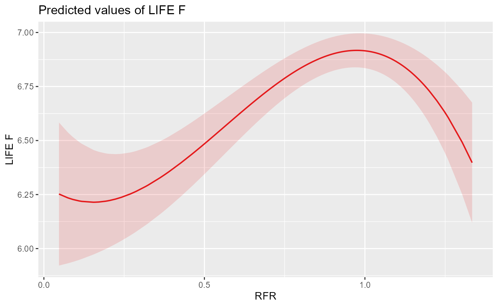
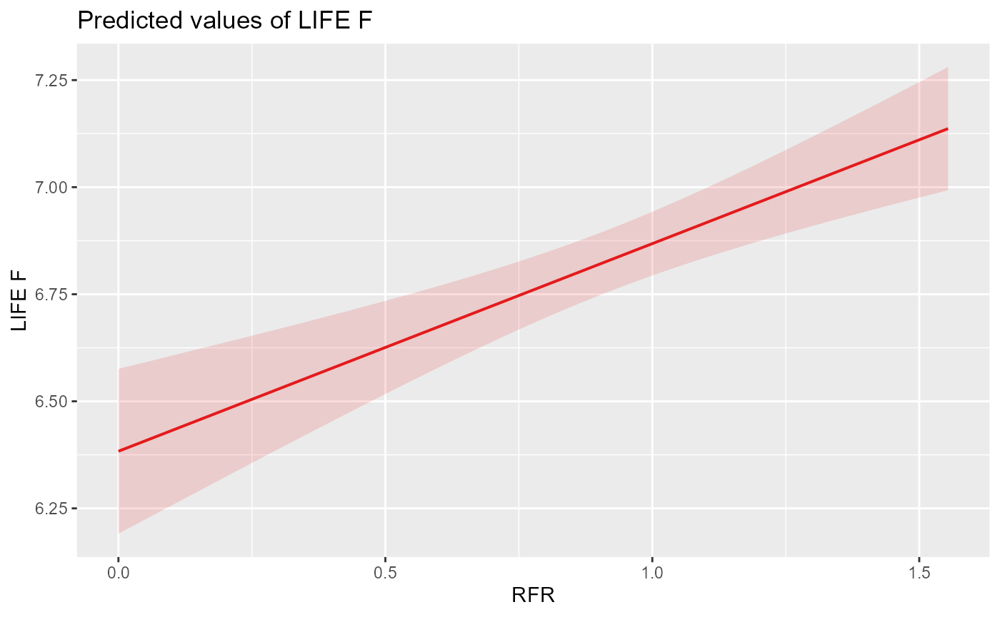
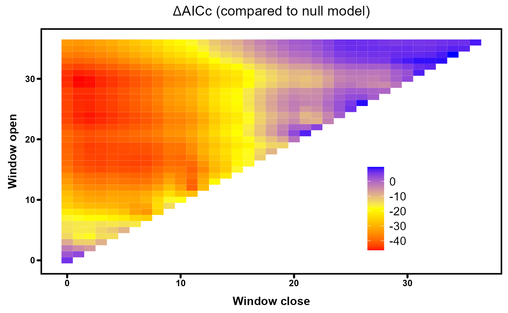
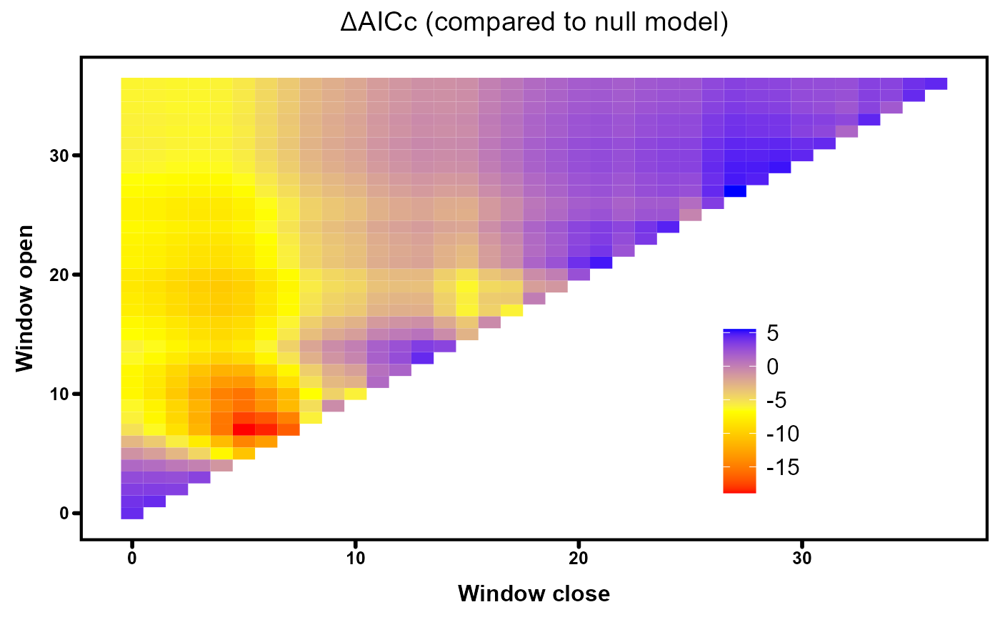

HE Toolkit Case Study: climwin analysis
Environment Agency (National Hydroecology Team, WR E&B) & APEM
2024-03-28
CaseStudy4.RmdIntroduction
One of the greatest challenges in building hydroecological models is how to select the most appropriate time period over which to calculate flow or flow alteration statistics. The choice of this period, or ‘window’, may be informed by knowledge of the river type(s) under investigation or target species phenology, but this expert opinion-based approach is subjective and provides no statistical confidence that the selected window is the most ecologically relevant. However, analytical methods are available that can be used to detect the time period over which environmental conditions are the best predictor of ecological responses.
This case study illustrates the use of one such method, a moving-window technique called climwin (short for climate window analysis), implemented using the R package of the same name (Bailey & van de Pol, 2016, PLoS ONE 11(12): e0167980). It uses EA macroinvertebrate data collected from 1995-2015 from chalk streams covered by the Herts North London (HNL), Northern East Anglian Chalk (NEAC), Cambridge Bedford Ouse (CBO) and Test & Itchen (T&I) groundwater models. Invertebrate sampling sites were spatially matched with groundwater model timeseries locations and screened to exclude sites with (i) <10 samples or <5 years of record, (ii) non-perennial flow, (iii) water quality issues, (iv) extensive physical modification or (v) inadequate groundwater model coverage or calibration. Groundwater model outputs were used to calculate monthly historical and naturalised mean flows, which were then combined to give a residual flow ratio (RFR) for each month. RFR is a simple measure of flow alteration, with values of <1, 1 and >1 signifying flows below, at and above natural respectively.
The purpose of this case study is to illustrate the use of the climwin method in the context of establishing flow-ecology relationships, rather than to demonstrate the various functions of the HE Toolkit (which are covered in other case studies). For brevity it therefore uses macroinvertebrate and flow data that have already been collated and processed.
Set-up
Install and load the HE Toolkit and other necessary packages:
# install.packages('remotes')
library(remotes)
# Conditionally install hetoolkit from github
if ("hetoolkit" %in% installed.packages() == FALSE) {
remotes::install_github("APEM-LTD/hetoolkit")
}
library(hetoolkit)
if (!require("pacman")) install.packages("pacman")
pacman::p_load(readxl, gridExtra, plyr, dplyr, arrow, mgcv, readxl, forecast, gratia, lme4, climwin,
knitr, kableExtra, sjPlot)Load the biology and flow datasets:
Climwin
We can now use climwin to detect the time window over which a macroinvertebrate community metric (LIFE family index) is best predicted by antecedent flow alteration. Note that we do not pair the biology and flow datasets using the HE Toolkit’s join_he function, but instead feed them as separate inputs into climwin’s slidingwin function. This works as the biology and flow sites have already been spatially matched, with both datasets sharing the same set of site IDs.
For this case study three mixed-effects models of varying complexity are used to capture LIFE responses to flow alteration (linear, quadratic and cubic), and their performance is then compared. This ensures that the process of detecting the most ecologically relevant antecedent flow period is not biased by prior assumptions about the shape of the flow-ecology relationship (e.g. linear or non-linear). To capture the influences of sampling year and random site-to-site variability on mean LIFE scores all models here take the form:
LIFE ~ RFR + year + (1 | biol_site_id)
Below we split the macroinvertebrate data into spring and autumn datasets, reflecting the potential for seasonal differences in ecological responses to flow in chalk streams, ready to apply the climwin approach to each.
Prepare the data
# First filter the flow dataset to (i) ensure a match with an invertebrate sample site, (ii) remove
# NAs and (iii) exclude RFRs > 2.5 (i.e. exceptionally discharge-rich conditions that could signify
# flow being augmented by effluent discharge)
cs3_flow_data <- dplyr::filter(cs3_flow_data, flow_site_id %in% unique(cs3_biol_data$biol_site_id)) %>%
filter(!is.na(rfr)) %>%
filter(!is.infinite(rfr)) %>%
filter(rfr <= 2.5)
# Filter biology dataset to ensure match in flow dataset
cs3_biol_data <- dplyr::filter(cs3_biol_data, biol_site_id %in% unique(cs3_flow_data$flow_site_id))
# create spring biology dataset
cs3_biol_data_spr <- cs3_biol_data %>%
dplyr::filter(month > 2 & month < 6)
# create autumn biology dataset
cs3_biol_data_aut <- cs3_biol_data %>%
dplyr::filter(month > 8 & month < 12)Apply slidingwin function
For climwin’s slidingwin function we have to specify a number of arguments, the key ones being:
- xvar: the climate or- in a hydroecological context- flow variables of interest. Here we use RFR as the ‘xvar’ argument.
- cdate/bdate: the columns containing the date data across our two datasets (which must be in the form dd/mm/yyyy).
- baseline: the structure of the null hydroecological model (i.e. the basic model to which the flow data for each tested time window will be added), here a mixed-effects regression model of the form outlined above. This argument takes the biology dataset as its data source.
- cinterval: the temporal resolution of the analysis, here monthly to reflect the resolution of the flow data.
- range: the start and end of the time period over which the climate (flow) window search will be undertaken, here 1-36 months prior to invertebrate sample collection. Be aware that increasing the width of the ‘range’ used in the analysis will increase the function’s processing time.
- type: the sliding window approach, either relative to a biological sampling date (‘relative’) or not (‘absolute’). The latter option may be useful for certain ecological receptors where the primary focus is on a fixed season or growth period (e.g. macrophytes), but here we specify ‘relative’ as we are interested in periods preceding invertebrate sampling dates.
- stat: the aggregate statistic(s) by which the flow (RFR) data are to be summarised, here simply the mean.
- func: the function(s) used to fit the flow variable of interest (RFR), here linear, quadratic and cubic.
- spatial: corresponding factors that define the spatial groups which the two datasets belong to (here biology and flow site IDs)
For more information search ?slidingwin.
# 1. Spring
# Linear model
FlowWin_spr <- slidingwin(xvar = list(Flow = cs3_flow_data$rfr), cdate = cs3_flow_data$date,
bdate = cs3_biol_data_spr$date, baseline = lmer(LIFE_FAMILY_INDEX ~ year + (1 |
biol_site_id), data = cs3_biol_data_spr), cinterval = "month", range = c(36,
0), type = "relative", stat = "mean", func = "lin", cmissing = "method2",
spatial = list(cs3_biol_data_spr$biol_site_id, cs3_flow_data$flow_site_id))
# view data table summarising the results of all tested windows
Output_sprL <- FlowWin_spr[[1]]$Dataset
# view summary of the best model
Model_sprL <- FlowWin_spr[[1]]$BestModel
# view dataframe containing the raw flow and biology data used to fit the best
# model
Data_sprL <- FlowWin_spr[[1]]$BestModelData
# Quadratic model
FlowWin_spr <- slidingwin(xvar = list(Flow = cs3_flow_data$rfr), cdate = cs3_flow_data$date,
bdate = cs3_biol_data_spr$date, baseline = lmer(LIFE_FAMILY_INDEX ~ year + (1 |
biol_site_id), data = cs3_biol_data_spr), cinterval = "month", range = c(36,
0), type = "relative", stat = "mean", func = "quad", cmissing = "method2",
spatial = list(cs3_biol_data_spr$biol_site_id, cs3_flow_data$flow_site_id))
# view data table summarising the results of all tested windows
Output_sprQ <- FlowWin_spr[[1]]$Dataset
# best model fit
Model_sprQ <- FlowWin_spr[[1]]$BestModel
# view BestModelData: data frame containing the raw flow and biological data
# used to fit BestModel
Data_sprQ <- FlowWin_spr[[1]]$BestModelData
# Cubic model
FlowWin_spr <- slidingwin(xvar = list(Flow = cs3_flow_data$rfr), cdate = cs3_flow_data$date,
bdate = cs3_biol_data_spr$date, baseline = lmer(LIFE_FAMILY_INDEX ~ year + (1 |
biol_site_id), data = cs3_biol_data_spr), cinterval = "month", range = c(36,
0), type = "relative", stat = "mean", func = "cub", cmissing = "method2",
spatial = list(cs3_biol_data_spr$biol_site_id, cs3_flow_data$flow_site_id))
# view data table summarising the results of all tested windows
Output_sprC <- FlowWin_spr[[1]]$Dataset
# best model fit
Model_sprC <- FlowWin_spr[[1]]$BestModel
# view BestModelData: data frame containing the raw flow and biological data
# used to fit BestModel
Data_sprC <- FlowWin_spr[[1]]$BestModelData
# 2. Autumn
# Linear model
FlowWin_aut <- slidingwin(xvar = list(Flow = cs3_flow_data$rfr), cdate = cs3_flow_data$date,
bdate = cs3_biol_data_aut$date, baseline = lmer(LIFE_FAMILY_INDEX ~ year + (1 |
biol_site_id), data = cs3_biol_data_aut), cinterval = "month", range = c(36,
0), type = "relative", stat = "mean", func = "lin", cmissing = "method2",
spatial = list(cs3_biol_data_aut$biol_site_id, cs3_flow_data$flow_site_id))
# view data table summarising the results of all tested windows
Output_autL <- FlowWin_aut[[1]]$Dataset
# best model fit
Model_autL <- FlowWin_aut[[1]]$BestModel
# view BestModelData: data frame containing the raw flow and biological data
# used to fit BestModel
Data_autL <- FlowWin_aut[[1]]$BestModelData
# Quadratic model
FlowWin_aut <- slidingwin(xvar = list(Flow = cs3_flow_data$rfr), cdate = cs3_flow_data$date,
bdate = cs3_biol_data_aut$date, baseline = lmer(LIFE_FAMILY_INDEX ~ year + (1 |
biol_site_id), data = cs3_biol_data_aut), cinterval = "month", range = c(36,
0), type = "relative", stat = "mean", func = "quad", cmissing = "method2",
spatial = list(cs3_biol_data_aut$biol_site_id, cs3_flow_data$flow_site_id))
# view data table summarising the results of all tested windows
Output_autQ <- FlowWin_aut[[1]]$Dataset
# best model fit
Model_autQ <- FlowWin_aut[[1]]$BestModel
# view BestModelData: data frame containing the raw flow and biological data
# used to fit BestModel
Data_autQ <- FlowWin_aut[[1]]$BestModelData
# Cubic model
FlowWin_aut <- slidingwin(xvar = list(Flow = cs3_flow_data$rfr), cdate = cs3_flow_data$date,
bdate = cs3_biol_data_aut$date, baseline = lmer(LIFE_FAMILY_INDEX ~ year + (1 |
biol_site_id), data = cs3_biol_data_aut), cinterval = "month", range = c(36,
0), type = "relative", stat = "mean", func = "cub", cmissing = "method2",
spatial = list(cs3_biol_data_aut$biol_site_id, cs3_flow_data$flow_site_id))
# view data table summarising the results of all tested windows
Output_autC <- FlowWin_aut[[1]]$Dataset
# best model fit
Model_autC <- FlowWin_aut[[1]]$BestModel
# view BestModelData: data frame containing the raw flow and biological data
# used to fit BestModel
Data_autC <- FlowWin_aut[[1]]$BestModelDataCompare Models
We can now compare the best linear, quadratic and cubic models for each dataset (spring and autumn) using the corrected Akaike information criterion (AICc), which provides a measure of the relative quality of the different models based on estimates of their prediction error (the lower the AICc, the better the model).
# select the best 6 models (spring & autumn: linear, quadratic & cubic)
sprL <- Output_sprL %>%
filter(deltaAICc == min(deltaAICc)) %>%
dplyr::mutate(Season = "Spring")
sprQ <- Output_sprQ %>%
filter(deltaAICc == min(deltaAICc)) %>%
dplyr::mutate(Season = "Spring")
sprC <- Output_sprC %>%
filter(deltaAICc == min(deltaAICc)) %>%
dplyr::mutate(Season = "Spring")
autL <- Output_autL %>%
filter(deltaAICc == min(deltaAICc)) %>%
dplyr::mutate(Season = "Autumn")
autQ <- Output_autQ %>%
filter(deltaAICc == min(deltaAICc)) %>%
dplyr::mutate(Season = "Autumn")
autC <- Output_autC %>%
filter(deltaAICc == min(deltaAICc)) %>%
dplyr::mutate(Season = "Autumn")
# Combine the 6 model summaries into one table and view
BestFit <- dplyr::bind_rows(sprL, sprQ, sprC, autL, autQ, autC) %>%
dplyr::select(Season, Function, deltaAICc:WindowClose)
knitr::kable(BestFit) %>%
kable_styling()| Season | Function | deltaAICc | WindowOpen | WindowClose |
|---|---|---|---|---|
| Spring | lin | -26.66460 | 19 | 10 |
| Spring | quad | -37.72406 | 8 | 7 |
| Spring | cub | -46.36475 | 30 | 1 |
| Autumn | lin | -18.89924 | 7 | 5 |
| Autumn | quad | -17.81980 | 13 | 7 |
| Autumn | cub | -16.92436 | 12 | 6 |
We can see from the table that the best-fit cubic model performs better (lowest deltaAICc) than the best-fit linear and quadratic models for spring and that the best-fit linear model performs best for autumn. We can also see that the time window over which the LIFE index is best predicted by mean antecedent RFR differs between spring and autumn (1-30 months for spring and 5-7 for autumn).
Note that ‘deltaAICc’ is a relative measure of model performance, defined as the difference between the model in question and the null model (i.e. one with no flow data).
Plotting output
Flow-ecology relationships
We can now visualise the response of LIFE to RFR as predicted by the best models for spring (cubic) and autumn (linear):
# 1. Spring
# rename default climwin variables
Data_sprC <- Data_sprC %>%
dplyr::rename(RFR = climate, LIFE_F = yvar)
# run spring-cubic model
lmer_sprC <- lmer(LIFE_F ~ year + (1 | biol_site_id) + RFR + I(RFR^2) + I(RFR^3), data = Data_sprC)
# plot spring-cubic model predicted values
plot_lmer_sprC <- sjPlot::plot_model(lmer_sprC, type = "pred", terms = "RFR [all]")
# 2. Autumn
# rename default climwin variables
Data_autL <- Data_autL %>%
dplyr::rename(RFR = climate, LIFE_F = yvar)
# run spring-linear model
lmer_autL <- lmer(LIFE_F ~ year + (1 | biol_site_id) + RFR, data = Data_autL)
# plot spring-linear model predicted values
plot_lmer_autL <- sjPlot::plot_model(lmer_autL, type = "pred", terms = "RFR [all]")
plot_lmer_sprC
plot_lmer_autL
We can see that both models predict intuitive but different flow-ecology relationships, with a peak in LIFE scores when historical flows are equal to naturalised (RFR = 1) in spring and a linear increase of LIFE with RFR in autumn.
Note that care should typically be taken when interpreting higher-degree polynomial (e.g. cubic) models due to their propensity for ‘overfitting’, whereby residual variation in the data is captured at the expense of describing the underlying relationship. For instance, if we were interested in further exploring the impact of flow augmentation (RFR > 1) on LIFE, we may want to validate the relationship depicted by the cubic model with a more robust approach, such as a generalised additive model (GAM).
AIC heatmaps
We can visualise the distribution of deltaAICc values across all tested flow windows with heatmaps, created using the plotdelta function in the climwin package. Blue regions represent flow windows with limited strength (AICc values similar to the null model) while the best predicting windows are denoted by red areas.
# Plot AICc heatmap for spring-cubic model
plotdelta(dataset = Output_sprC)
# Plot AICc heatmap for autumn-linear model
plotdelta(dataset = Output_autL)
For spring, we see a region of strong windows down the left side of the heatmap that is relatively diffuse but with an epicentre corresponding to the optimal flow window of 1-30 months that we identified above. The horizontal colour gradient appears more pronounced than the vertical gradient, implying that the close of the window is a more critical determinant of model performance than the opening. For autumn, the peak in model performance is much more concentrated, highlighting the importance of selecting appropriate values for both window opening and closure.